Keywords: Concurrent programming, Multithreading programming, Architectural abstraction, Architectural views, concurrency properties visualization
© Supported by the research institutes Fraunhofer IESE and DFKI-IFS
Figure 1 show the overview structure of ArchViMP framework where the interaction of the framework with external systems is depicted.
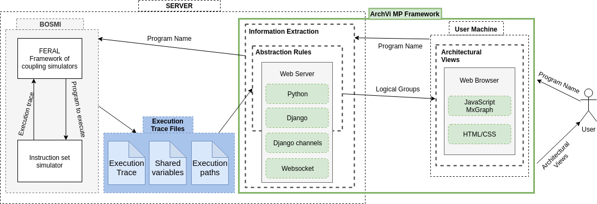
Figure 1: The overview of ArchViMP framework structure
We receive three text files as the input for our framework. In below we clarify the format of each.
This is provided by the previous work (See Figure 2), which is based on using the Eraser Lockset algorithm In below there is the list of shared variables of ROSACE benchmark as an example.
variable name,Address of memory,Data type;
395293680,{395293680},INT;CONSTANT;
step_simu,{394729264},INT;CONSTANT;
tasks,{394729520},POINTER;POINTER;
max_step_simu,{394729552},INT;CONSTANT;
h_c,{393974944},DOUBLE;CONSTANT;
Vz_control_50483_delta_e_c_delta_e_c,{394798512},DOUBLE;CONSTANT;
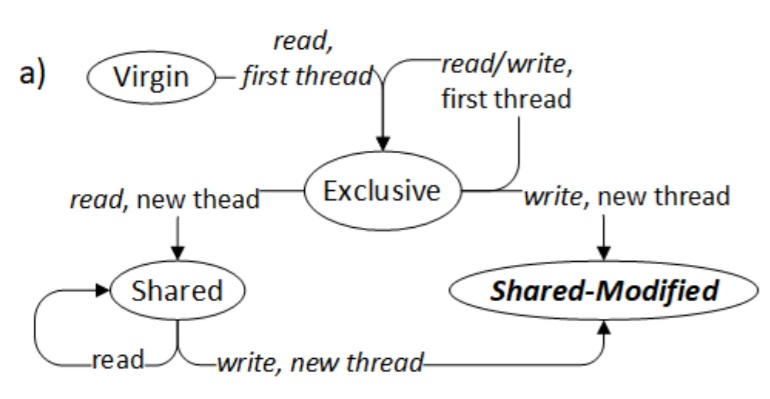
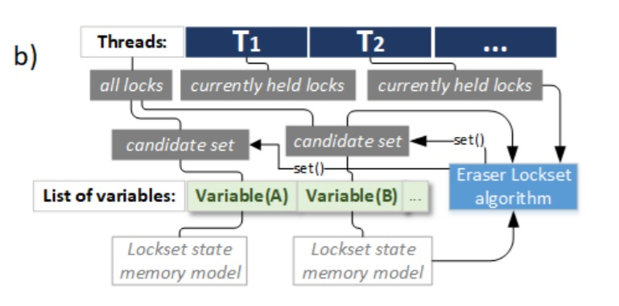
Figure 2: a) Eraser Lockset memory state model; b) Data structures necessary for Lockset
This file is a detailed list of the executed instructions. In the box below a small part of the file is displayed. In below you see the execution trace data of ROSACE benchmark as an example.
Timestamp,ThreadID,Operation,ParameterName (function or a variable name),Address of memory,Additional info (data typeof variable),Value,filename,source code line number
11.19.58.1958,6245422,FUNCTIONCALL,main,0,,,,0
11:19:58:429,6245422,STORE,,46648696,INT;LOCAL;,0,,0
11:19:58:429,6245422,STORE,tsimu,46649000,INT;LOCAL;,20,rosace.c,10
11:19:58:429,6245422,LOAD,tsimu,46649000,INT;LOCAL;,20,rosace.c,14
11:19:58:429,6245422,LOAD,,0,INT;,20,rosace.c,14
11:19:58:429,6245422,FUNCTIONCALL,run_rosace,0,INT;CONSTANT;,,rosace.c,14
...
11:19:58:636,20176314,STORE,,46648968,INT;LOCAL;,1,assemblage.c,145
11:19:58:636,20176314,GETELEMENTPTR,,46648972,POINTER;LOCAL;,0x2c7ce8c,assemblage.c,145
11:19:58:636,20176314,STORE,,46648972,INT;LOCAL;,0,assemblage.c,145
11:19:58:636,20176314,GETELEMENTPTR,,46648968,POINTER;LOCAL;,0x2c7ce88,assemblage.c,145
11:19:58:636,20176314,STORE,,395332088,POINTER;LOCAL;,0x2c7ce88,assemblage.c,145
11:19:58:636,20176314,GETELEMENTPTR,struct.write_proto_t,395332092,POINTER;LOCAL;,0x179049fc,assemblage.c,145
11:19:58:640,20176314,STORE,,395332092,INT;LOCAL;,2,assemblage.c,145
...
Figure 3: Format of execution path logs
To represent concurrency-related architectural properties of software, we adopt the UML (Unified Modelling Language) 2.0 notations ( The elements of UML (TM) 2.0 style ).
Primarily, we reuse the views-specific notations from Embedded Modelling Profile (EMP) , which is an extension to SPES 2020 . In addition, we use the UML block notation from APD introduced in a Pattern-supported Parallelization Approach to show threads and their groups. In order to distinguish a box of elements, we utilize EMP's idea of semantic separation of boxes through a static set of colors and dedicated stereotypes. Moreover, we expand the in/out notation of the block notation from APD and introduce four flags to specify the three access operation types for all elements and to clarify the shared variables that are only used inside a logical decision by a Condition Only flag. Table 1 in below contains the detailed description of the notations.
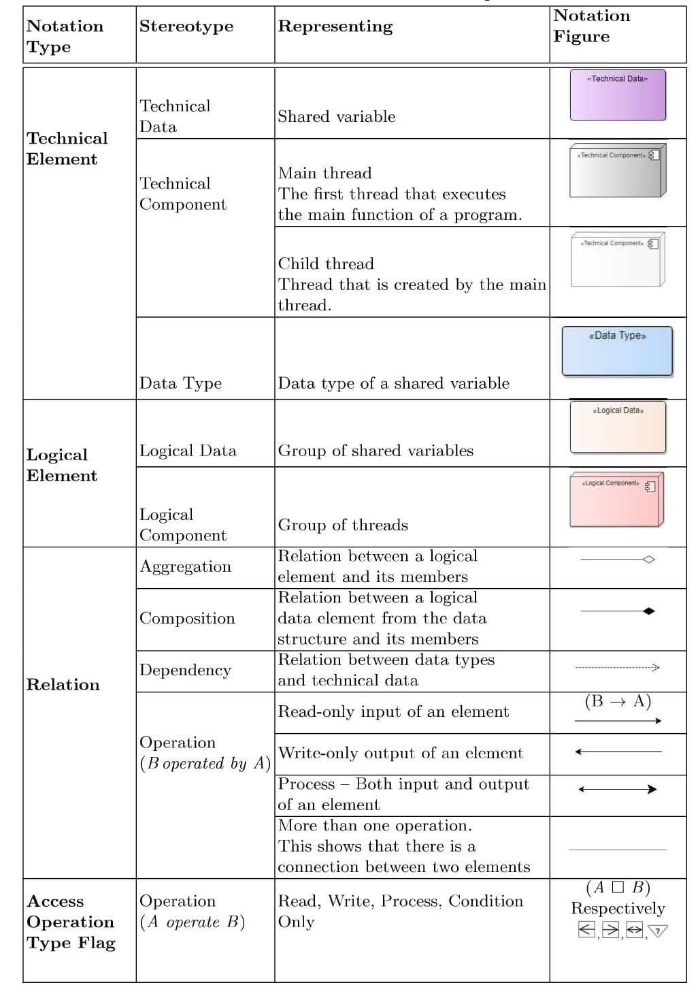
Table 1: ArchViMP Notation Description
To evaluate our work, we have publicly available benchmarks of parallel and concurrent programs based on POSIX threads. In order to test our approach on software with a complexity that resembles that present in industrial software, we focused on two publicly available benchmarks.
| ROSACE | TACLeBench powerwindow |
ThreadCreator | |
|---|---|---|---|
| Number of threads (technical components of software) | 6 | 4 | 10 |
| Number of shared variables (technical data of software) | 6 | 7 | 19 |
When applied on these three benchmarks, our approach produced diagrams at all three levels of abstraction. At level 0, it produced the raw visualization of the execution traces, showing the direct interaction between threads and shared variables. Level 1 of the abstraction illustrates the members (either technical or logical) of each set of logical data as well as the operation access types applied to each member by the threads. At abstraction level 2, we show the interconnection of logical components and logical data. In the following, we show the results for each benchmark individually.
This visualization shows the direct interaction between threads over shared variables with no-abstraction.
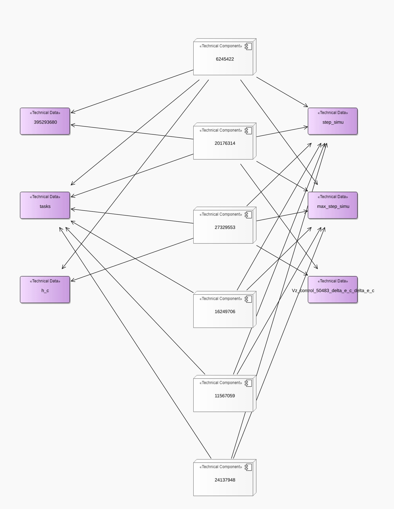
The functional concurrency view describes the functional behavior of threads. This view shows the interaction between a logical component created by EPFR rule and logical data
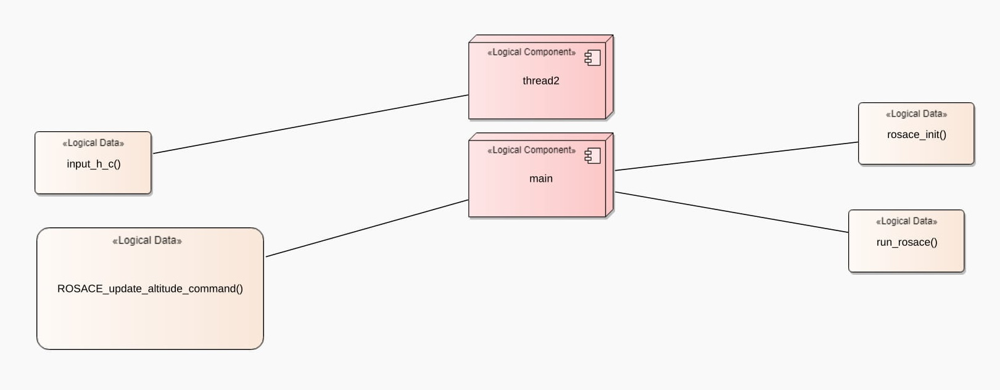
Functional Flow sub-view at level 2 - created by EPFR and CFR rules
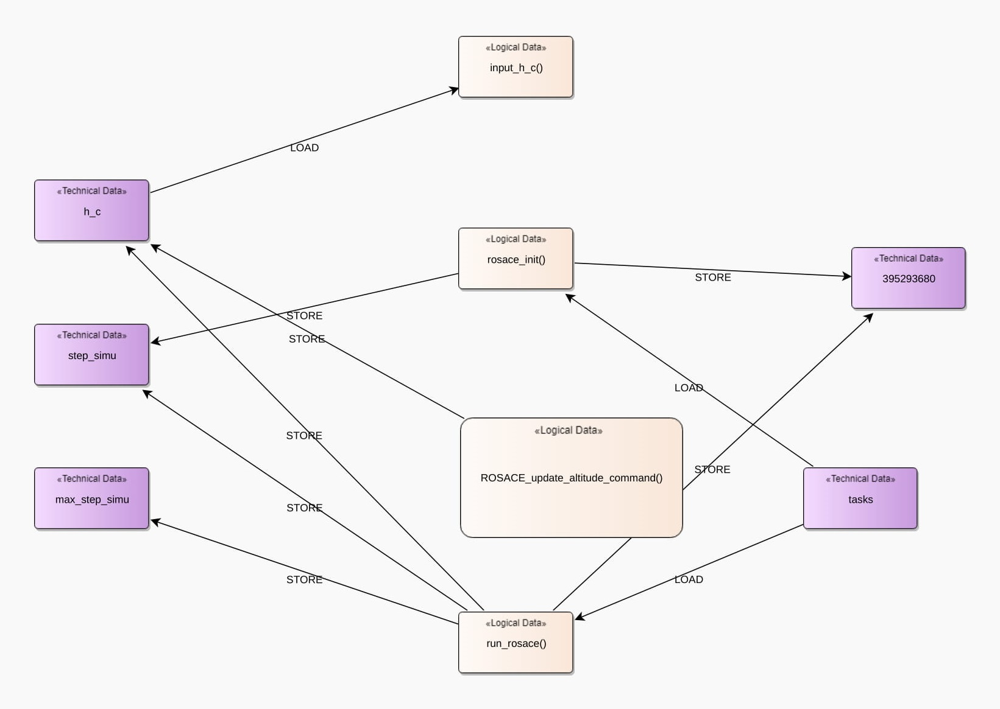
Functional Flow sub-view at level 1 - created by CFR, FOR and possibly DSR rules
Even after abstraction interpretation of interaction between elements might be challenging.
Therefore, we made the understanding of views easier by providing an interactive interaction between sub-views.
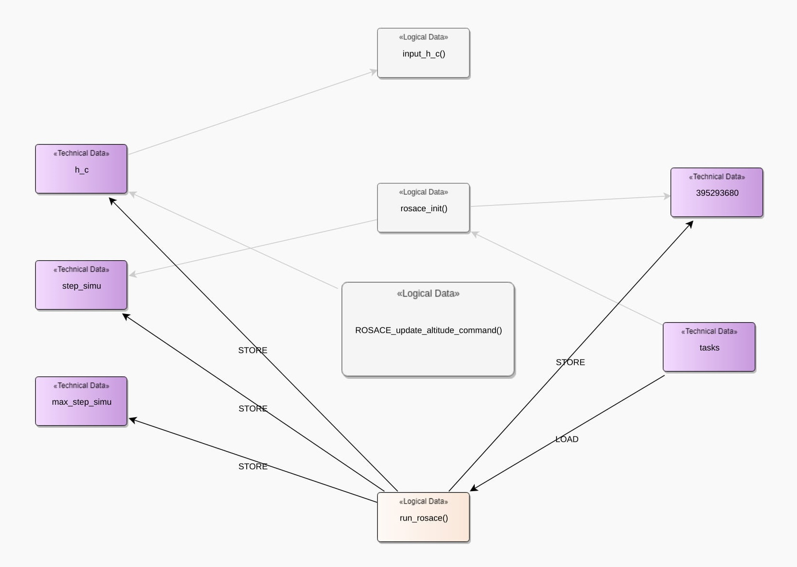
Functional Flow sub-view at level 1 - function run_rosace() is selected by user
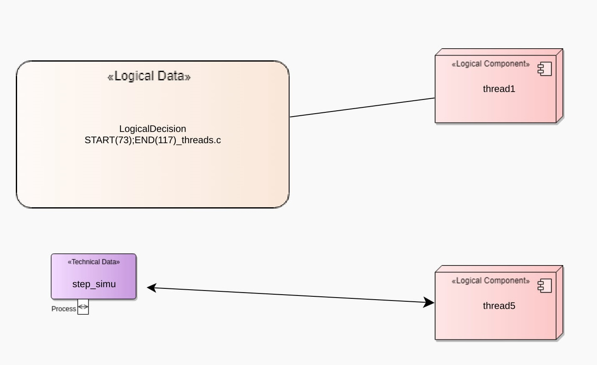
Execution Control Flow sub-view at level 2 - created by EPFR, LDR rules
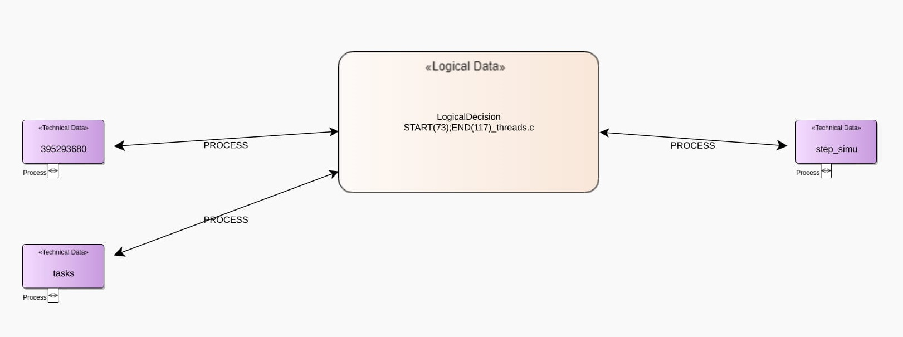
Execution Control Flow sub-view at level 1 - created by LDR, LDOR and possibly DSR rules
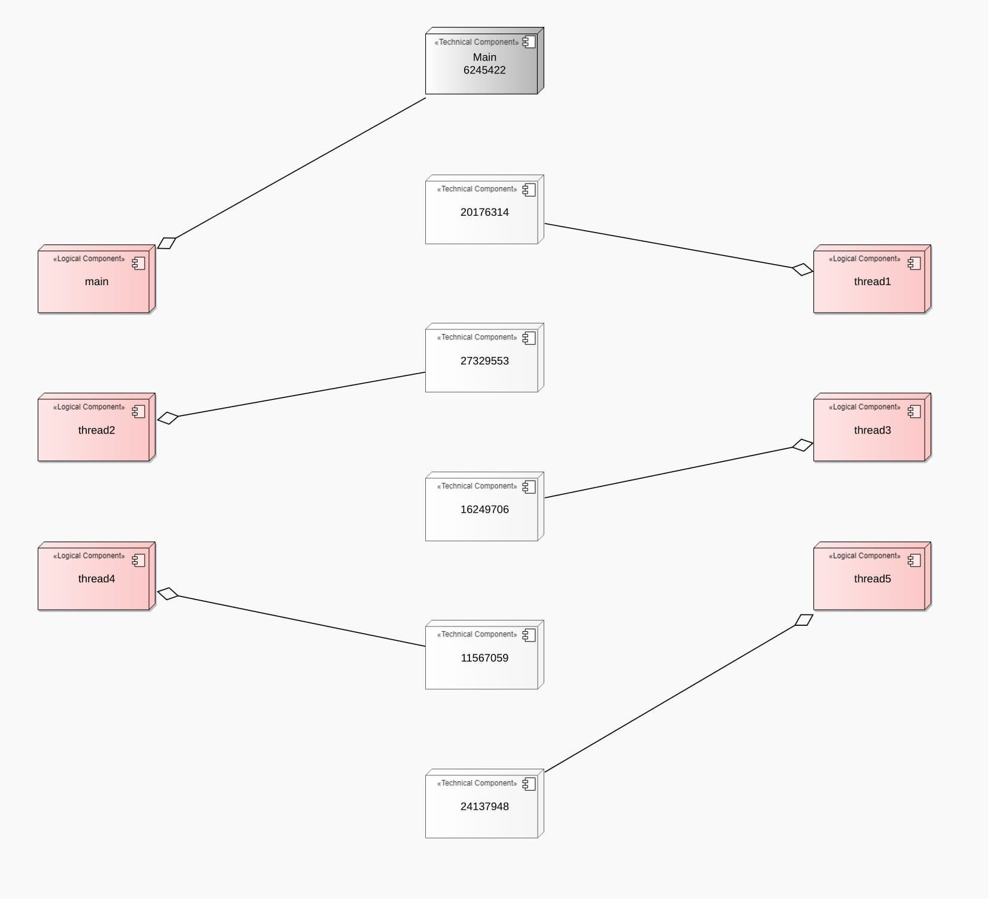
Technical concurrency view at level 1 - created by EPFR rule
| ROSACE | Raw visualization | Functional Flow sub-view | Execution Control Flow sub-view | ||
|---|---|---|---|---|---|
| Level 2 | Level 2 | ||||
| Abstraction Level | 0 | 2 | 1 | 2 | 1 |
| Number of Elements (Nodes/Boxes) | 12 | 6 | 9 | 4 | 4 |
| Number of Relations (Edges/Lines) | 24 | 4 | 10 | 2 | 3 |
| Element Reduction Percentage | - | ||||
| Relation Reduction Percentage | - | ||||
This visualization shows the direct interaction between threads over shared variables with no-abstraction. For this benchmark we reached:
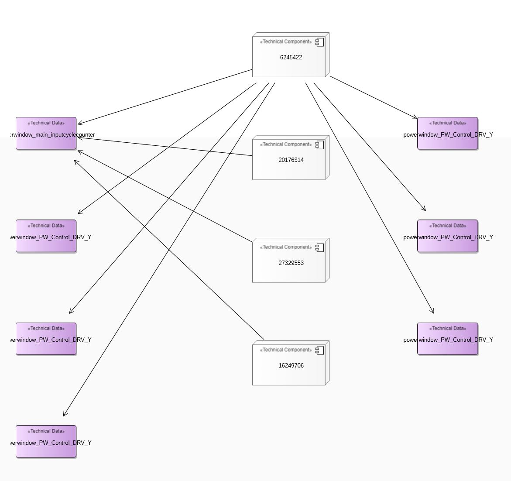